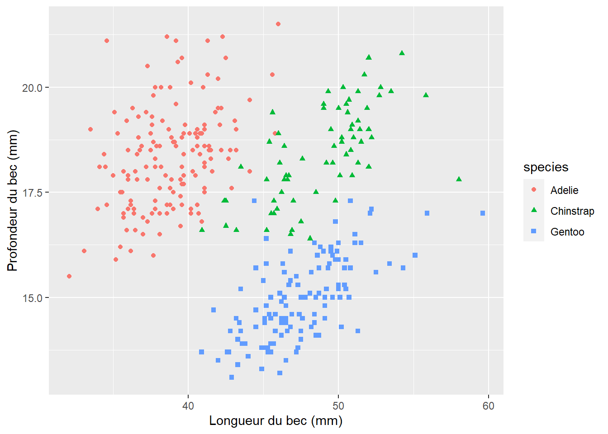

library(tidyverse)
library(palmerpenguins)
library(gt)Une histoire de manchots
Données
Pour cette analyse, nous utiliserons le jeu de données sur les manchots du paquet R palmerpenguins (https://allisonhorst.github.io/palmerpenguins).
Les données penguins contiennent les éléments suivants
glimpse(penguins)Rows: 344
Columns: 8
$ species <fct> Adelie, Adelie, Adelie, Adelie, Adelie, Adelie, Adel…
$ island <fct> Torgersen, Torgersen, Torgersen, Torgersen, Torgerse…
$ bill_length_mm <dbl> 39.1, 39.5, 40.3, NA, 36.7, 39.3, 38.9, 39.2, 34.1, …
$ bill_depth_mm <dbl> 18.7, 17.4, 18.0, NA, 19.3, 20.6, 17.8, 19.6, 18.1, …
$ flipper_length_mm <int> 181, 186, 195, NA, 193, 190, 181, 195, 193, 190, 186…
$ body_mass_g <int> 3750, 3800, 3250, NA, 3450, 3650, 3625, 4675, 3475, …
$ sex <fct> male, female, female, NA, female, male, female, male…
$ year <int> 2007, 2007, 2007, 2007, 2007, 2007, 2007, 2007, 2007…Espèces
Nous avons 3 des espèces dans ce jeu de données : Adelie, Gentoo, and Chinstrap qui ne sont pas distribuées de manière égale.
penguins |>
count(species) %>%
knitr::kable()| species | n |
|---|---|
| Adelie | 152 |
| Chinstrap | 68 |
| Gentoo | 124 |

La Figure 2 montrent les différences de becs par espèces.
ggplot(
penguins,
aes(
x = bill_length_mm, y = bill_depth_mm,
color = species, shape = species
)
) +
geom_point() +
labs(x = "Longueur du bec (mm)", y = "Profondeur du bec (mm)")
Manchots
Le tableau ci-dessous Table 1 présente les 10 premiers manchots de l’ensemble de données.
penguins |>
slice_head(n = 10) |>
select(species, island, bill_length_mm, bill_depth_mm) |>
gt()- 1
- On utilise gt ici, mais tout paquet de tableau peut être utilisé par example flextable
| species | island | bill_length_mm | bill_depth_mm |
|---|---|---|---|
| Adelie | Torgersen | 39.1 | 18.7 |
| Adelie | Torgersen | 39.5 | 17.4 |
| Adelie | Torgersen | 40.3 | 18.0 |
| Adelie | Torgersen | NA | NA |
| Adelie | Torgersen | 36.7 | 19.3 |
| Adelie | Torgersen | 39.3 | 20.6 |
| Adelie | Torgersen | 38.9 | 17.8 |
| Adelie | Torgersen | 39.2 | 19.6 |
| Adelie | Torgersen | 34.1 | 18.1 |
| Adelie | Torgersen | 42.0 | 20.2 |
Pour aller plus loin sur ce jeu de donnée
Consulter la vignette du paquet R palmerpinguins disponible sur https://allisonhorst.github.io/palmerpenguins/